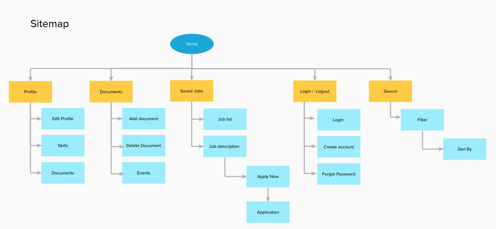
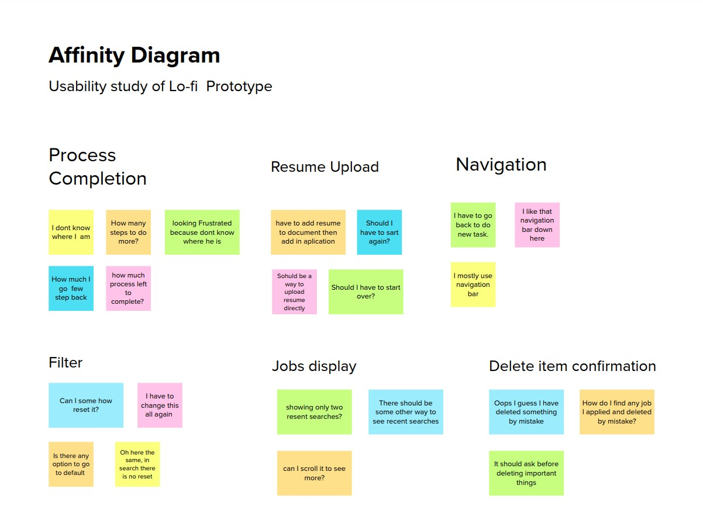
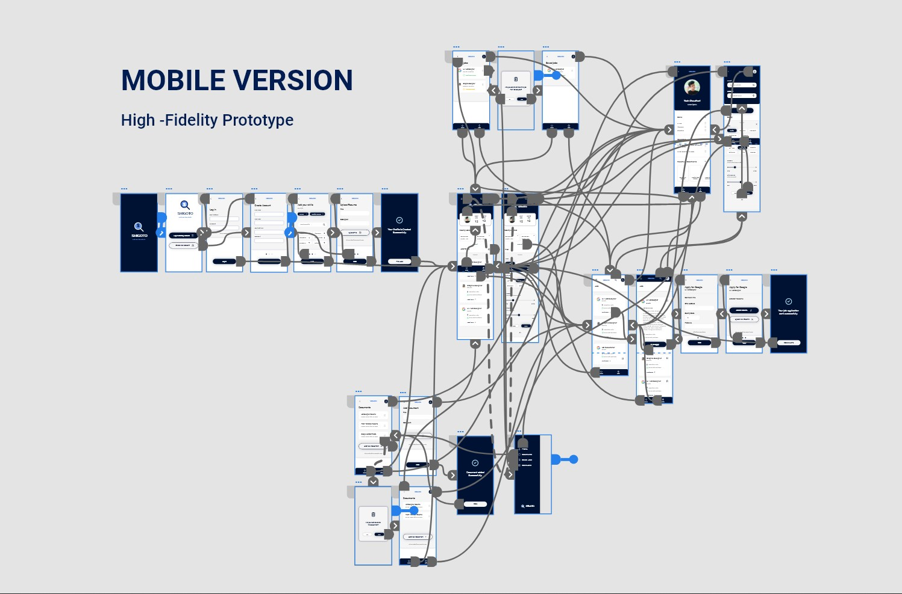
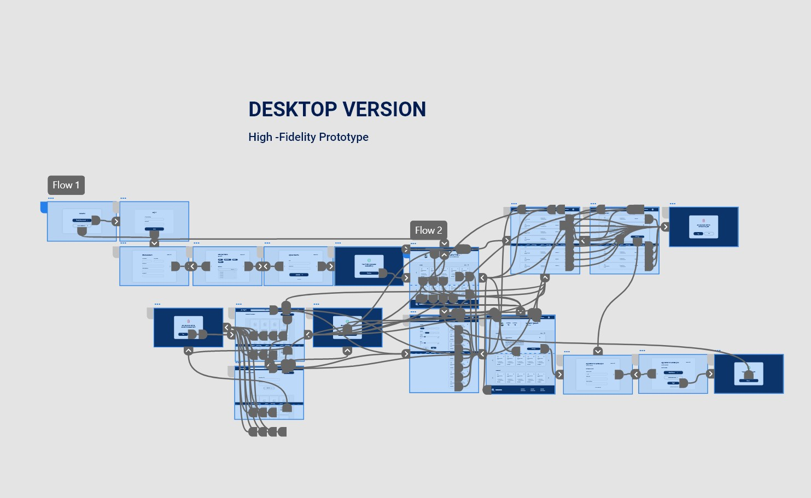

SHIGOTO - Job searching platform UX design and Case Study
Yash Chaudhari

-
The product
Shigoto is a tool to help new college grads to find new entry-level jobs or internships according to their skill set. Shigoto has a native mobile app and a responsive website. Shigoto target customers who are job seekers like newly graduated students and employees who want to switch job.
-
Project duration
1 Month, July 2022
-
The problem
Pre graduates & fresh college grads have to go through different sources find jobs according to their skills and go through a long process to apply for the job.
-
The goal
Designing a tool as an app and responsive website for fresh college grads to find desired jobs easily.
-
My role
UX Designer - Designing tool conceptualization to delivery.
-
Responsibilities
Research through conducting interviews, Paper and digital wireframing, low & high fidelity wireframing & prototyping, Usability Studies, accounting for accessibility, and iterating on designs.
Understanding Users
User research summary
To understand users and their needs, I conducted interviews and created empathy maps about users for whom I am designing the user experience. Through research, I found fresh college grads who didn't get placements, pre-graduates who want to build skillsets & explore their future jobs, and employees who want to switch their jobs as primary user groups.
User pain points
-
Job Seeking
Users have to check the different sources for job hiring announcements.
-
Application Process
The application process for each company or job is different and complex.
-
Applied job log
Have to manually take notes of status of each company they applied.
-
IA
Facing trouble finding details because pages are cluttered with a lot of information.
User Persona
“I want to find a meaningful and stable job according to my skill-set.”
Riya
Riya is a 21-year-old fresh college graduate.She graduated in the field of Information technologyShe feels overwhelmed when she looks for jobs. She mostly likes to read from library books for her study. She uses different social media apps regularly. She wants to explore jobs suitable to him his skills.
- Age: 21
- Education: B. Tech + Self-learning
- Hometown: Ahmedabad
- Occupation: Fresh College graduate
Pain Points
- Go through the very complex process for job applying
- Have to Write descriptive job applications every time
Goals
- Searching for jobs
- Searching for learning opportunities
- Find networking opportunities
- Want more job opportunities quickly
User Persona

“I need an app that helps me find more job opportunities.”
Jay
Jay is a Pre-final year B.tech student. He always gets average grades in college academics, but he developed skills required for real-world jobs. . He also works on diverse projects to take the experience as a freelancer. He searched for jobs when he was at home, working on a project, or studying. He is looking for a stable job because he comes from a middle-class family and wants to be stable by himself economically.
- Age: 21
- Education: B. Tech + Self-learning
- Hometown: Ahmedabad
- Occupation: Fresh College graduate
Pain Points
- Anxious about his resume
- Have to take note of jobs he applied for
- Lack of opportunities
- Anxious about job satisfaction
- Developing Resume
Goals
- Searching for entry-level jobs
- Searching for Internships
- Searching for information about companies
- Searching for learning opportunities
User Stories
-
1
As a fresh college graduate I want quickly apply for jobs so that I can save time and apply for more jobs.
-
2
As a pre-finale-year college student I want to find a perfect job according to my skill set so that I can utilize my skills as my source of income.
Sitemap
After Understanding the users, I created a site map to define the structure of the website & it also helped me to work on the next designing stages of the process.
Paper wireframes

When I design anything, sketching is the first step I always follow. In the brainstorming stage I tried to sketch down different version of wireframes for screen. From them I chose elements according to users need and structured them into refined wireframes.
Digital wireframes
Digital wirefames 1
This wireframe is for job sections of the native mobile app. The wireframe contains cards for different Jobs, and in the expanded card, there are quick apply CTA & a small button to save jobs with the job descriptions.
Digital wirefames 1
This wireframes is for Documents section for responsive website which has sticky navigation bar, footer small form to upload new document.
Prototypes
Low-fidelity prototype
This low fidelity prototype has the main user flow from crating profile to job search, and quick application for the job. I used these prototypes for the first usability study.


Usability study
I conducted two rounds of usability studies for the native apps and websites. Findings from the first study helped Usability Study me to refine the wireframes. The second Usability study with high fidelity prototype revealed what aspects of mock-ups needed refining.
Round 1
- No option to upload a resume during the application process
- Not Showing Progress in the process.
- No confirmation before deleting documents or saved jobs
- No option to reset the Filter.
Round 2
- Instructions are not readable due to the small text size.
- Different text input fields confuse users.
- Not showing units of prices.
Mockup

Mockup
After the usability study findings, I refined the wireframes and made high-fidelity mockups. I added a button to upload a new resume in between the application process. and the Progress bar with two dots.
Mockup
I added a reset button to set back the filter to the default again. Kept the profile icon at the top right corner because users are used to find it there. and added navigation bar at bottom.
Prototyping
 Accessibility Considerations
-
1
Main primary & secondary color text fields pass the WACAG AAA contrast check for text fields and main CTAs.
-
2
Used alert colors like red and green to indicate alerts on activity completion and item deletion.
-
3
Used appropriate icons to provide a better user experience and also added tooltips where needed.
Going Forward
Impact
The tool makes our primary user's job searching and exploring and application process simple and quick according to their needs.
“I use this tool on my phone and laptop, and it is very easy to use now I do not have to take note of every company I applied to.”
— Quote from early user
Next Steps
-
1
Conduct a post-launch usability study to check whether the product fulfills users’ needs, take feedback, and iterate on designs for the next version.
-
2
Research for new use cases around new possible userbase and features which supports the main user flow like job posting flow for company side user flows.
Thank you for reviewing my work on the SIGOTO app and responsive website! If you like to see more or get in touch the contacts information is provided below.